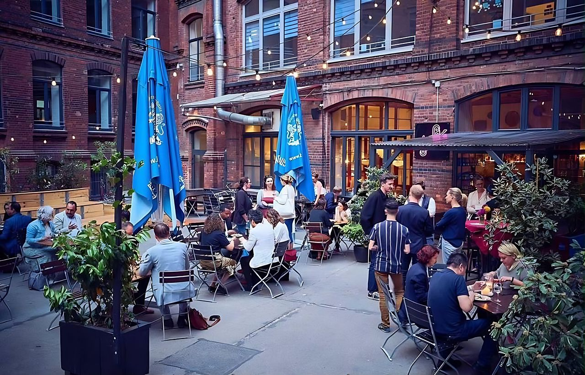
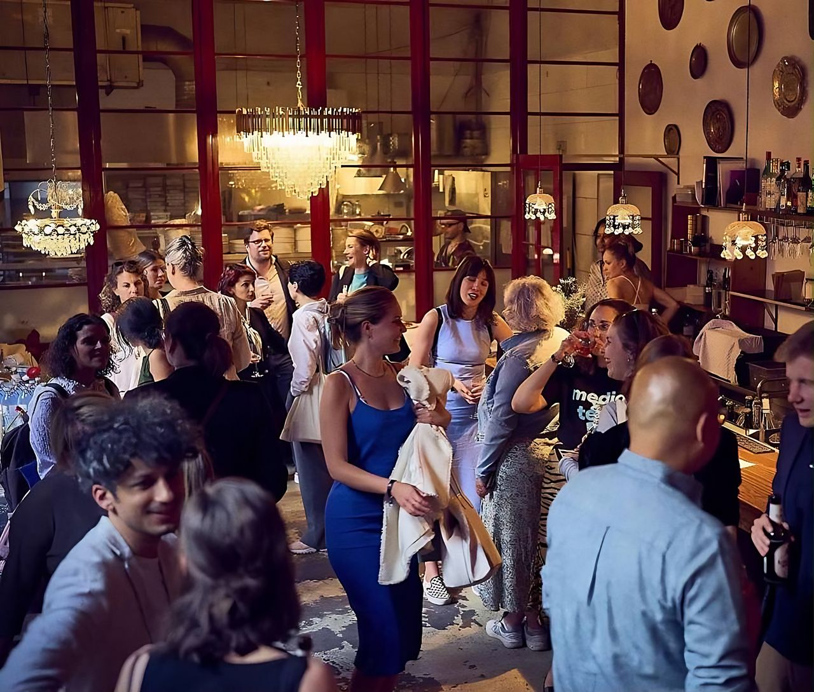

הקמת עסק חדש
מהרעיון ועד יום הפתיחה.
- תוכנית עסקית ותכנון
- מיתוג וקונספט
- בניית סטנדרטים תפעוליים

שני אחיאל · יזמית ומנהלת בתחום האירוח, ברלין
אני עוזרת לבעלי מסעדות ויזמים להקים, לייצב ולפתח עסקי אירוח, על בסיס למעלה מעשור של ניהול והקמה של מסעדות, מותגים ואירועים.


ארבעה מסלולי עבודה, לפי השלב שבו העסק נמצא. אפשר לבחור אחד או לשלב.
מהרעיון ועד יום הפתיחה.
כשהמספרים לא מסתדרים, מחזירים שליטה.
לעסק שעובד ורוצה לצמוח ולהתעדכן.
הפקה והובלה של אירועים פרטיים ועסקיים, ובניית מחלקת אירועים בתוך עסק קיים.
תהליך פשוט, בלי הפתעות.

את כל מה שאני מציעה עשיתי בעצמי, בברלין, כבעלים וכמנהלת.

כתבו עליי


 BIG LOVE · שער ופורטרטאפריל 2020כתבת פורטרט2017ביקורת על Shishi, חמש נקודות20/2018
BIG LOVE · שער ופורטרטאפריל 2020כתבת פורטרט2017ביקורת על Shishi, חמש נקודות20/2018
התחלתי בשירות ובבר בתל אביב והתקדמתי לניהול אירועים. מאז הקמתי וניהלתי מסעדות בברלין, וליוויתי שיתופי פעולה עם רשתות מלונות.
בעלת תואר ראשון בתקשורת ומנהל עסקים, אזרחית ישראלית וגרמנית, דוברת עברית, אנגלית וגרמנית.
ספרו לי בכמה משפטים איפה העסק נמצא, ואחזור אליכם.
השאירו פרטים
נחזור אליכם תוך 24 שעות.